The first discovered subspecies of the SNID family which lead to the instantiation of Variable Oscillations.
Research of SNIDv1 allowed for better understanding of Wave Multiplication Synthesis and resulted in the later discovery of SNIDxs.
Wave Multiplication Synthesis [WMS] is calculated in a similar method to phase distortion synthesis though it becomes highly unstable as the comparator value increases [Fig. 1].
The chaotic nature of the WMS oscillator coupled with the frequency divider of the SNIDs allows for a vast array of rhythmic textures.

Figure 1: WMS frequency sweep with comparator at 0%, 50%, and 100%.
Documentation
The patching interface of the first SNIDs allowed for interconnecting with external passive electrical components. While this trait seems advantageous, the later generations were observed to allocate more space to patching in the form of 2mm banana cables. It is likely that the small interface of the first SNIDs lead to more errors in communication.
Specifications
2 x oscillators, 1 x clock divider, 3 x attenuators, 32 x patch points
IO: 3.5mm headphone output, 3.5mm stereo CV, microUSB power
 
